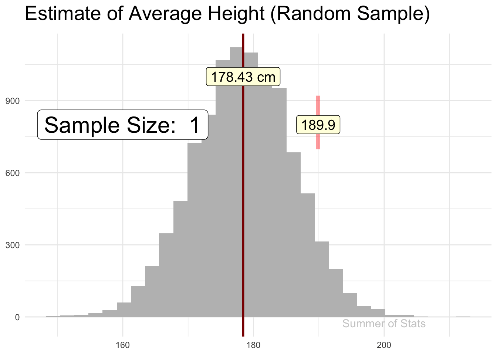
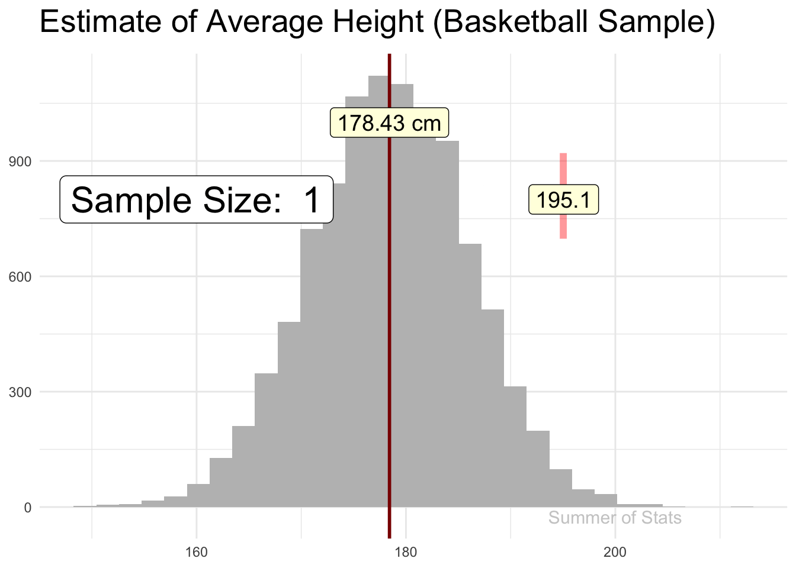
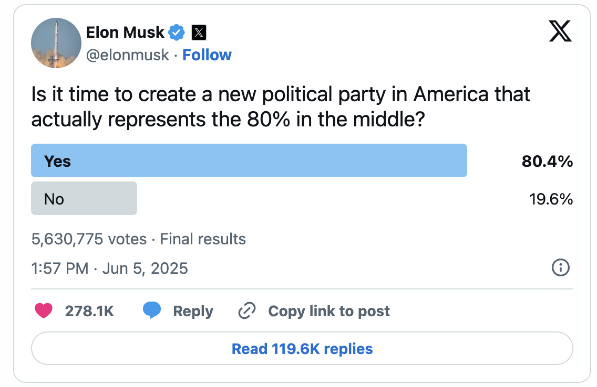

(or “Why Surveys Lie”)
When posed with a tough question, sampling is one of our greatest super-powers.
The “S” is actually for “Sampling”…
We’ve talked at length about why - the random sample forms the basis of nearly all statistics. But what happens when our sample ISN’T random?
Things become much more tricky, and we encounter another popular method for misleading people.
How to Lie (Recap)
As a reminder, there are 3 common ways to lie with statistics:
- Ignoring variability
- Using a non-representative sample ← YOU ARE HERE
- Choosing a bad estimator
Let’s talk today about what happens when people abuse the assumption of random sampling.
Sampling in a Perfect World
Last summer, I detailed an example about estimating the height of a population using a random sample of 100 people.
This sample returned an estimate that quickly converged with the actual population mean:

The beauty of a random sample is clear - as we see more data, our estimate about that population tends to become better and better.
Sampling in an Imperfect World
As a contrast, when we do a poor job of sampling, there is no guarantee that our answer will be any good.
Let’s see what happens when we collect height data from a non-representative sample - here, we sampled ONLY basketball players (who tend to be much taller than a normal person):

Our sample doesn’t represent the population particularly well, and so our statistic never arrives at the true answer, no matter how much data we collect.
Sampling in the Real World
Now for the bad news: in the real world, getting a truly random sample is generally difficult or impossible.
It might be as simple as collecting your data at the wrong place (a basketball tournament), or at the wrong time (during the day, when many adults are working), or using the wrong technology (surveying only cell-phone users, which may miss older people).
These decisions seem incredibly minor at first glance, but could be enough to invalidate our assumption of random sampling.
So, it pays to be very careful any time you rely on a sample of data.
Bad Samples in Daily Life
One practical lesson that you can take away is:
Always ask how the data was collected
Many times, we are forced to work with a “pretty random” sample, with some imperfections.
But, as we’ll see, people can take advantage of this wiggle room to impose their preferred answer on the data.
An Obvious Example
Let’s start with an obvious example of how an imperfect sample can affect our result.
Any time you search for a product on Amazon, the website provides user reviews on each product they offer, to let you know how satisfied previous buyers were.
An example from Amazon
However, this sample of reviews is not representative - Amazon has significant issues with fake reviews where sellers induce users to leave a glowing review for a given product.
By manipulating who provides a review, sellers are able to artificially enhance (ie. lie about) their product’s customer ratings. Buyer beware!
A Not-So-Obvious Example
In real life, the effect of non-random sampling can be much more difficult to see.
Take the following poll that was recently in the news:

Source: X
This result shows a clear desire for creating 3rd party in the US. After all, it had over 5 million respondents, right?
But, looking closer, we realize that this survey is not a random sample - it only includes people who are:
- active users of X and
- followers of Elon Musk
Given these limitations, we can hardly call this a representative sample of the US population. There is no way to conclusively say this represents the opinion of the average American.
An Obvious Solution
As a rule of thumb - it is wise to take non-scientific survey results like these with a healthy dose of skepticism.
Whether it be Reddit, Fox News, or even Reader’s Digest, any survey restricted to a specific audience will be biased, often making it impossible to tell if the results have any basis in reality.
A simple (if boring) solution to this problem is to steer clear of these low-quality surveys. Instead, look to well-established pollsters who are much less likely to have a poor-quality sample.
Summing Up
Samples are incredibly powerful tools for many problems. They are also vulnerable to manipulation.
Think about it - our data is what gives us our statistical result. So, if someone can control which data are captured, they can also control the result.
Bad samples come in all shapes and sizes. Even if your dataset is HUGE, that is no guarantee of accuracy. As we saw in our example when our sample isn’t representative, there’s no guarantee our answer is correct, no matter how much data we collect.
As the saying goes: “Garbage in, Garbage out”.
Up Next: Bad Statistics
Next week, we’ll wrap up the series on lying by exploring how people can bend the truth by using the wrong estimator.
See how changing your statistic can completely change the story your data tells.
===========================
R code used to generate plots:
- Animated Plots
library(data.table)
library(ggplot2)
library(gganimate)
set.seed(060124)
### Generate 10000 sample height records, using mean = 178.4, std = 7.59
simulated_pop <- cbind(1:10000, rnorm(10000, 178.4, 7.59)) |> as.data.table()
simulated_mean <- simulated_pop[,mean(V2)] |> as.data.table()
### Pull a random sample
good_sample <- simulated_pop[sample(.N,100)]
# Add calculations for cumulative mean
good_sample <- good_sample[,cum_V2 := cumsum(V2)]
good_sample <- good_sample[,Row_Index := .I]
good_sample <- good_sample[,cum_avg_V2 := cum_V2/Row_Index]
### Pull a non-random sample from a basketball league
# (assume these people all are in top 10% for height...)
bad_sample <- simulated_pop[V2 > quantile(simulated_pop$V2, probs = .90)][sample(.N,100)]
# Add calculations for cumulative mean
bad_sample <- bad_sample[,cum_V2 := cumsum(V2)]
bad_sample <- bad_sample[,Row_Index := .I]
bad_sample <- bad_sample[,cum_avg_V2 := cum_V2/Row_Index]
### Plot good sample
good_sample_convergence <- ggplot(good_sample, aes(x=V2)) +
geom_histogram(data = simulated_pop, aes(x=V2), fill="grey", position = "identity") +
theme_minimal() +
theme(axis.title.y=element_blank(),
axis.title.x=element_blank(),
axis.ticks.x=element_blank(),
plot.title = element_text(size = 20, face = "bold")) +
ggtitle("Estimate of Average Height (Random Sample)") +
geom_vline( xintercept = simulated_pop[,mean(V2)], lwd = 1, col = "darkred") +
geom_label(data = simulated_mean, aes(x = V1, y = 1000, label = paste0(round(V1, digits = 2), " cm") ), size = 5, fill = "lightyellow") +
geom_point(data = good_sample, mapping = aes(y = 810, x = cum_avg_V2),
size = 20, color = 'red', shape = '|', alpha = .4) +
geom_label(data = good_sample, aes(x = cum_avg_V2, y = 800, label = round(cum_avg_V2, digits = 1)), size = 5, fill = "lightyellow") +
geom_label(data = good_sample, aes(x = 160, y = 800, label = paste("Sample Size: ", Row_Index)), size = 8, fill = "white") +
geom_text(data = simulated_mean, aes(x = 200, y = -25, label = "Summer of Stats"), col="grey80", size = 4) +
transition_reveal(Row_Index, keep_last = FALSE)
animate(good_sample_convergence, duration = 8,end_pause = 30)
### Plot bad sample
bad_sample_convergence <- ggplot(bad_sample, aes(x=V2)) +
geom_histogram(data = simulated_pop, aes(x=V2), fill="grey", position = "identity") +
theme_minimal() +
theme(axis.title.y=element_blank(),
axis.title.x=element_blank(),
axis.ticks.x=element_blank(),
plot.title = element_text(size = 20, face = "bold")) +
ggtitle("Estimate of Average Height (Basketball Sample)") +
geom_vline( xintercept = simulated_pop[,mean(V2)], lwd = 1, col = "darkred") +
geom_label(data = simulated_mean, aes(x = V1, y = 1000, label = paste0(round(V1, digits = 2), " cm") ), size = 5, fill = "lightyellow") +
geom_point(data = bad_sample, mapping = aes(y = 810, x = cum_avg_V2),
size = 20, color = 'red', shape = '|', alpha = .4) +
geom_label(data = bad_sample, aes(x = cum_avg_V2, y = 800, label = round(cum_avg_V2, digits = 1)), size = 5, fill = "lightyellow") +
geom_label(data = bad_sample, aes(x = 160, y = 800, label = paste("Sample Size: ", Row_Index)), size = 8, fill = "white") +
geom_text(data = simulated_mean, aes(x = 200, y = -25, label = "Summer of Stats"), col="grey80", size = 4) +
transition_reveal(Row_Index, keep_last = FALSE)
animate(bad_sample_convergence, duration = 8,end_pause = 30)